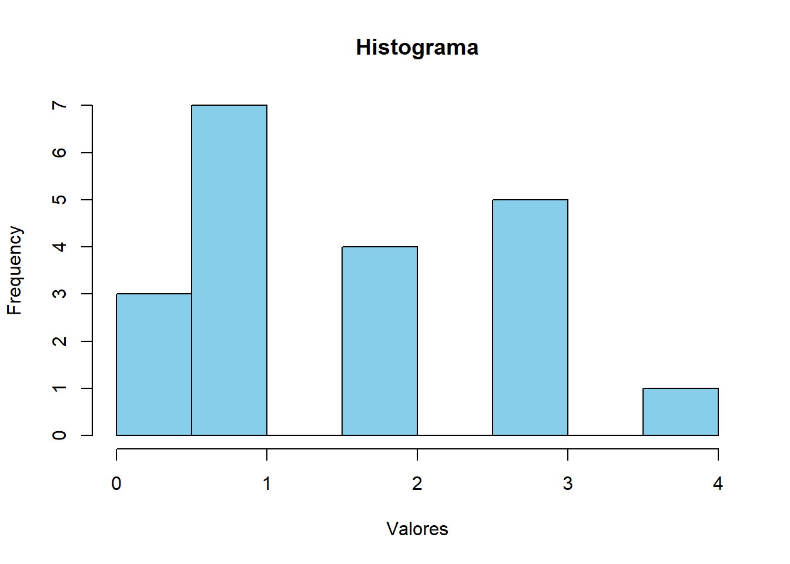
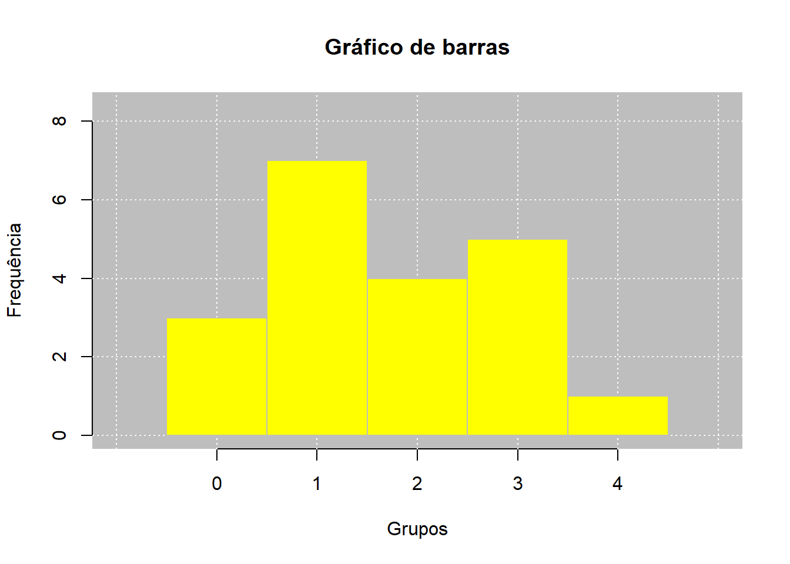

Código
10 + 20[1] 30Código
#comprimento do objeto
length(10)[1] 1Código
#modo do objeto
mode(10)[1] "numeric"Código
#tipo do objeto
typeof(10)[1] "double"Código
#verificar se o objeto é um vetor
is.vector(10)[1] TRUE

Estatística e Probabilidade
Prof. Ben Dêivide (DEFIM/CAP/UFSJ)
Este relatório tem como objetivo apresentar os conceitos básicos do R, incluindo sua estrutura, principais funcionalidades e aplicações práticas. Além disso, serão abordados exemplos introdutórios que demonstram como utilizar a linguagem para resolver problemas simples de análise de dados, proporcionando uma base sólida para estudos mais avançados.
Entender a historia de como surgiu a ideia da linguagem R, as utilidades práticas, a fundamentação dessa linguagem e seus principios que o diferem de outras.
Para estudo foi utilizado aulas presencias do professor de estatistica e probabilidade,Ben Dêivide (Dêivid ([s.d.])) , ministradas para o curso de engenharia mecâtronica na universidade federal de sao joao del rei(ufsj), o livro R básico(Batista e Oliveira (2022)), e videos aulas de numero 00 até 08 da playlist R básico 2024(Dêivide (2024)).
O R é um ambiente de software livre e de código aberto consolidado como uma das ferramentas mais poderosas para a análise estatística e visualização de dados. Criado originalmente por Robert Gentleman e Ross Ihaka, o sistema evoluiu através da colaboração contínua da comunidade científica global. Essa natureza colaborativa resultou em um vasto ecossistema de pacotes, conferindo ao R uma versatilidade que permite desde cálculos matemáticos simples até o desenvolvimento de aplicações web complexas,destacando-se por ser interpretada(ao invés de transformar todo o código em linguagem de máquina antes de rodar, o interpretador lê o código e já executa cada comando diretamente.), possuir escopo léxico(forma como uma linguagem de programação determina onde uma variável pode ser acessada, com base em onde ela foi criada no código. e ser distribuída sob licença gratuita, o que democratiza o acesso à ciência de dados de alto nível.
Para otimizar o fluxo de trabalho, utiliza-se o RStudio, a principal IDE (Ambiente de Desenvolvimento Integrado) para a linguagem. Disponível tanto em versões desktop quanto via navegador, o RStudio organiza a escrita, execução e depuração de código em uma interface intuitiva, aumentando a produtividade e acesso a todos.
A estrutura do R é regida por três princípios essenciais :
1-Tudo o que existe é um objeto: No R, até os elementos mais básicos são objetos. Um número não é apenas um valor bruto, x é um objeto da classe numeric. Até mesmo o código que você escreve é um objeto (do tipo language), o que permite que o R analise e modifique seu próprio código antes de executá-lo.
2-Tudo o que acontece é uma chamada de função: Operações e cálculos são resultados de funções em execução,por exemplo, o operador de soma + é uma função. Quando você faz 2 + 2, o R está executando a função +(2, 2).
3-Interfaces são parte do sistema: O R foi projetado para interagir nativamente com outros softwares e linguagens.
O cotidiano de programação no R envolve elementos e arquivos específicos:
1-Console: O coração da execução, onde os comandos são processados e os resultados exibidos.
2-Prompt (>): O sinal visual que indica que o sistema está pronto para receber instruções.
3-Ambiente Global (Global Environment): Memória temporária onde residem todos os objetos criados na sessão.
RData: Salva a imagem dos objetos da sessão.
Rhistory: Mantém o registro histórico dos comandos utilizados.
Scripts (.R): Documentos de texto onde o código é planejado e preservado.
A interação com o código pode ocorrer diretamente no Console (via tecla Enter) ou através de Scripts (usando o atalho Ctrl + Enter). Além disso, é possível carregar códigos externos com a função source(). Para a gestão de arquivos, o conceito de Diretório de Trabalho é fundamental: getwd(): Identifica a pasta atual de operação. setwd(): Define um novo local de busca e salvamento no computador.
Em R, um objeto é uma entidade que organiza informações em duas dimensões: interna (como o dado é alocado na memória) e externa (como ele é apresentado ao usuário). Para entender um objeto, analisamos seus atributos:
Modo/Tipo: Verificado por mode() ou typeof().
Comprimento: Verificado por length().
Classe: Definida por class(), determina como as funções tratarão aquele objeto.
O R organiza informações em diferentes categorias e formatos, embora nem tudo siga estritamente o paradigma de orientação a objetos.
numeric: Números reais e inteiros.
logical: Valores booleanos (TRUE/FALSE).
character: Cadeias de texto (strings).
factor: Dados categóricos.
list, matrix, array e data.frame.
As informações podem ser agrupadas das seguintes formas:
Vetores Atômicos: A unidade básica (ex: sequências de números ou textos).
Matrizes e Arrays: Estruturas organizadas em dimensões (2D para matrizes, ND para arrays).
Listas: Coleções flexíveis que podem conter diferentes tipos de objetos simultaneamente.
Data Frames: O padrão ouro para ciência de dados; tabelas onde cada coluna pode ter um tipo de dado diferente, facilitando a análise de planilhas complexas.
1-Tudo em R é um objeto:
10 + 20[1] 30#comprimento do objeto
length(10)[1] 1#modo do objeto
mode(10)[1] "numeric"#tipo do objeto
typeof(10)[1] "double"#verificar se o objeto é um vetor
is.vector(10)[1] TRUETodos os resultados com as caracteristicas acima comprova que 10 foi considerado um objetos.
2-Tudo o que acontece é uma chamada de função:
is.function(`+`)[1] TRUEO comando is.function nos trás a resposta se o argumento colocado é uma função ou não,o resultado true da a certeza que “+” é uma função.
3-Interfaces são parte do sistema:
`+`function (e1, e2) .Primitive("+")O resultado .primitive(“+”) significa uma chamada de função de nome “+” na linguagem C.Que nos mostra que o R é formado por mais de uma linguagem sendo uma delas o C
dados <- c(0,0,0,1,1,1,1,1,1,1,2,2,2,2,3,3,3,3,3,4)primeiro atribuimos os dados que temos no objeto dados com <- e como é um conjunto de numeros colocamos c() para o R tratar como vetor.
media_valor <- mean(dados)
print(media_valor) # Resultado: 1.7[1] 1.7A função mean() faz o calculo para nos do valor medio ou media, dos dados que temos,a função print() usamos para mostrar o valor
frequencia <- table(dados)
print(frequencia) # Mostra a contagem de cada númerodados
0 1 2 3 4
3 7 4 5 1 A função table() faz o calculo para nos do valor da frequuencia dos dados,a função print() usamos para mostrar os valores.Sendo os de cima os dados e os numeros em baixo quantas vezes se repetem.
median(dados)[1] 1.5A partir daqui para os proximos codigos não coloquei print(),para você entender que não precisa para a linguagem R,quando a função ja retorna um valor, a função median() retorna o valor da mediana.
sd(dados)[1] 1.174286A função sd() retorna o valor do Desvio padrão.
var(dados)[1] 1.378947A função var() retorna o valor da Variância.
length(dados)[1] 20A função length() retorna a quantidade de elementos dentro do conjunto/vetor.
hist(dados, col="skyblue", main="Histograma", xlab="Valores")
Esse é um exemplo de vários graficos que o R consegue fazer.
O leem é uma ferramenta que podemos usar no R que simplifica diversas funções,como a criação de gráficos com marcações de média,moda e mediana,criação de tabelas de frequencia. Para começar a utilizar o leem instalamos a biblioteca Leem utilizando o comando install.packages(“leem”). (dados utilizados são hipoteticos):
# Anexando o pacote leem
library(leem)Para a utilização da biblioteca anexos ela sempre no começo do codigo,usando library(leem)
dados <- c(0,0,0,1,1,1,1,1,1,1,2,2,2,2,3,3,3,3,3,4)Como ainda continua sendo linguagem definimos um objeto com os dados que temos da mesma forma que fizemos anteriormente
dados <- c(0,0,0,1,1,1,1,1,1,1,2,2,2,2,3,3,3,3,3,4)
dados <- new_leem(dados,variable = 2)
tabfreq(dados)
Tabela de frequência
Tipo de variável: continuous
Classes Fi PM Fr Fac1 Fac2 Fp Fac1p Fac2p
1 -0.66 |--- 0.66 3 0.000 0.15 3 20 15 15 100
2 0.66 |--- 2 7 1.330 0.35 10 17 35 50 85
3 2 |--- 3.33 9 2.665 0.45 19 10 45 95 50
4 3.33 |--- 4.66 1 3.995 0.05 20 1 5 100 5
==============================================
Classes: Agrupamento de classes
Fi: Frequência absoluta
PM: Ponto médio
Fr: Frequência relativa
Fac1: Frequência acumulada (abaixo de)
Fac2: Frequência acumulada (acima de)
Fp: Frequência percentual
Fac1p: Frequência acumulada percentual (abaixo de)
Fac2p: Frequência acumulada percentual (acima de) Aqui criamos uma tabela de frequencia usando a função tabfreq(),mas definimos o objeto dados como continuous na função new_leem(dados,variable = 2), o ‘2’ define como continuous podemos tambem escrever continuous ao inves de ‘2’.
dados <- c(0,0,0,1,1,1,1,1,1,1,2,2,2,2,3,3,3,3,3,4)
dados <- new_leem(dados,variable = 2)
mpos(dados,grouped = TRUE) # Medidas de posicao$average
[1] 1.86
$median
[1] 2
$mode
[1] 2.27Pode ser utilizado para calcular as medidas de posições com a função mpos()
dados <- c(0,0,0,1,1,1,1,1,1,1,2,2,2,2,3,3,3,3,3,4)
dados <- new_leem(dados,variable = 1)
barplot(dados)
O leem também pode ser usado para a criação de graficos simples e complexos, um exemplo é o gráfico e barras usando o comando barplot().
Compreendemos que o R sendo um ambiente completo no qual a organização dos dados em objetos e a utilização de funções constituem a base para qualquer análise.foi possivel também evidenciando que o domínio da sintaxe básica e dos tipos de dados é fundamental antes de avançar para análises mais complexas.